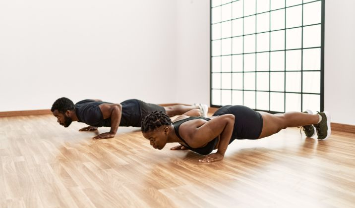

Upper Chest Workouts
Incline Dumbbell Flies

If you’ve been lifting for a while, you know that incline bench exercises reign supreme when it comes to upper–chest activation. The great thing about the incline dumbbell fly is that in addition to activating the upper pectoralis major, it also works the anterior deltoid muscles and biceps. Plus, adding dumbbells to the incline bench offers more variety in terms of range of motion, so you can hit multiple muscle groups at once.
Movement Category: Tertiary
Programming: 2-4 sets of 10-15 repetitions
Weight: Use a weight that leaves you 1 to 2 reps short of failure, e.g., RPE 8 to 9.
To do an incline dumbbell fly:
- Set your bench inclination to anywhere between 15 to 30 degrees.
- Lie down on the bench with dumbbells in each hand. Keep the dumbbells at your sides, level with your chest. Your elbows should be bent at 90 degrees.
- Press the dumbbells up until they’re just short of lockout. Your palms should be facing each other and there should be a slight bend at your elbow. This is your starting position.
- Take a deep breath and slowly open up your elbows to each side, lowering them laterally until you feel a stretch in your pectoral muscles.
- Avoid lowering your dumbbells below chest height, as this could lead to an injury. At the lowest position, your arms should be bent very slightly at the elbow.
- Hold for a second and slowly swing your arms back up to the starting position.
- Squeeze your pecs and hold the dumbbells at the top for a second.
Watch Demonstration
Incline Bench Press

The incline bench press is one of the best exercises for targeting the upper chest. By adjusting the bench to an inclined position, you emphasize the upper part of the pectoral muscles.
Movement Category: Primary
Programming: 3-5 sets of 6-12 repetitions
Weight: Use a weight that allows you to complete the set with proper form.
To do an incline bench press:
- Set the bench to an incline of about 15-30 degrees.
- Lie back on the bench with your feet flat on the ground and grab the barbell with a shoulder-width grip.
- Unrack the bar and lower it to your upper chest, keeping your elbows at about a 45-degree angle to your body.
- Press the bar back up to the starting position, extending your arms fully but without locking out your elbows.
- Repeat for the desired number of repetitions.
Watch Demonstration
Low to High Cable Flies

Low to high cable flies target the upper chest by mimicking the natural movement of the muscle fibers. This exercise provides a great range of motion and constant tension.
Movement Category: Secondary
Programming: 3-4 sets of 10-15 repetitions
Weight: Use a moderate weight that allows you to maintain control throughout the exercise.
To do low to high cable flies:
- Set the pulleys at the lowest position and attach a handle to each one.
- Stand between the pulleys with one foot forward for stability, holding a handle in each hand with your palms facing up.
- With a slight bend in your elbows, bring your hands up and together in front of your chest, forming an arc with your arms.
- Squeeze your chest muscles at the top of the movement and then slowly lower your arms back to the starting position.
- Repeat for the desired number of repetitions.
Watch Demonstration
Decline Push-Up

Decline push-ups are a bodyweight exercise that targets the upper chest. By elevating your feet, you shift more emphasis onto the upper pectoral muscles.
Movement Category: Bodyweight
Programming: 2-4 sets of 12-20 repetitions
Weight: Bodyweight
To do a decline push-up:
- Place your feet on a bench or elevated platform and your hands on the floor, slightly wider than shoulder-width apart.
- Keep your body in a straight line from head to heels, engaging your core.
- Lower your body until your chest nearly touches the floor, keeping your elbows at a 45-degree angle to your body.
- Push back up to the starting position by extending your arms.
- Repeat for the desired number of repetitions.
Watch Demonstration
Middle Chest Workouts
Bench Press

The bench press is a classic exercise that primarily targets the middle part of the chest, along with the front deltoids and triceps.
Movement Category: Primary
Programming: 3-5 sets of 6-12 repetitions
Weight: Use a weight that allows you to complete the set with proper form.
To do a bench press:
- Lie on a flat bench with your feet flat on the floor.
- Grab the barbell with a grip slightly wider than shoulder-width apart.
- Unrack the bar and lower it to your mid-chest, keeping your elbows at about a 45-degree angle to your body.
- Press the bar back up to the starting position, extending your arms fully but without locking out your elbows.
- Repeat for the desired number of repetitions.
Watch Demonstration
Dumbbell Bench Press

The dumbbell bench press is an excellent alternative to the barbell bench press, allowing for a greater range of motion and unilateral strength development.
Movement Category: Primary
Programming: 3-4 sets of 8-12 repetitions per arm
Weight: Use a weight that challenges you while maintaining proper form.
To do a dumbbell bench press:
- Lie on a flat bench with a dumbbell in each hand, resting on your thighs.
- Using your thighs to help raise the dumbbells, lift them one at a time to shoulder width.
- Rotate your wrists forward so that the palms of your hands are facing away from you. This is your starting position.
- Press the dumbbells up with your chest, extending your arms fully without locking out your elbows.
- Slowly lower the dumbbells back to the starting position.
- Repeat for the desired number of repetitions.
Watch Demonstration
Cable Flies

Cable flies are an effective exercise for targeting the middle chest. They provide constant tension throughout the movement, promoting muscle growth and strength.
Movement Category: Secondary
Programming: 3-4 sets of 10-15 repetitions
Weight: Use a moderate weight that allows you to maintain control throughout the exercise.
To do cable flies:
- Set the pulleys to chest height and attach a handle to each one.
- Stand between the pulleys with one foot forward for stability, holding a handle in each hand with your palms facing inward.
- With a slight bend in your elbows, bring your hands together in front of your chest, forming an arc with your arms.
- Squeeze your chest muscles at the peak of the movement and then slowly return to the starting position.
- Repeat for the desired number of repetitions.
Watch Demonstration
Pushups

Pushups are a classic bodyweight exercise that effectively targets the middle chest. They are versatile and can be adjusted to different difficulty levels.
Movement Category: Primary
Programming: 3 sets of 10-20 repetitions (adjust reps based on your fitness level)
To do pushups:
- Start in a plank position with your hands slightly wider than shoulder-width apart, arms extended, and body straight from head to heels.
- Lower your body until your chest nearly touches the floor while keeping your elbows close to your body.
- Push back up to the starting position, straightening your arms fully without locking your elbows.
- Repeat for the desired number of repetitions.
Watch Demonstration
Lower Chest Workouts
Decline Dumbbell Press

The decline dumbbell press targets the lower part of the chest. It also engages the triceps and shoulders, making it a great compound exercise.
Movement Category: Primary
Programming: 3-4 sets of 8-12 repetitions
Weight: Use a weight that challenges you while maintaining proper form.
To do a decline dumbbell press:
- Set the bench to a decline of about 15-30 degrees.
- Lie back on the bench with a dumbbell in each hand, resting on your thighs.
- Using your thighs to help raise the dumbbells, lift them one at a time to shoulder width.
- Rotate your wrists forward so that the palms of your hands are facing away from you. This is your starting position.
- Press the dumbbells up with your chest, extending your arms fully without locking out your elbows.
- Slowly lower the dumbbells back to the starting position.
- Repeat for the desired number of repetitions.
Watch Demonstration
Chest Dips

Chest dips are a bodyweight exercise that targets the lower chest, triceps, and shoulders. They can be performed using parallel bars or a dip station.
Movement Category: Bodyweight
Programming: 2-4 sets of 8-15 repetitions
Weight: Bodyweight
To do chest dips:
- Grab the parallel bars with your palms facing inward and your arms fully extended.
- Lean slightly forward and lower your body until your upper arms are parallel to the floor.
- Keep your elbows close to your body as you press back up to the starting position.
- Repeat for the desired number of repetitions.
Watch Demonstration
High to Low Cable Crossover

The high to low cable crossover targets the lower chest and provides a full range of motion, promoting muscle growth and strength.
Movement Category: Secondary
Programming: 3-4 sets of 10-15 repetitions
Weight: Use a moderate weight that allows you to maintain control throughout the exercise.
To do high to low cable crossover:
- Set the pulleys to the highest position and attach a handle to each one.
- Stand between the pulleys with one foot forward for stability, holding a handle in each hand with your palms facing downward.
- With a slight bend in your elbows, bring your hands down and together in front of your body, forming an arc with your arms.
- Squeeze your chest muscles at the peak of the movement and then slowly return to the starting position.
- Repeat for the desired number of repetitions.
Watch Demonstration
Incline Push-Up

Incline push-ups target the lower chest while also engaging the shoulders and triceps. They are a bodyweight exercise that can be adjusted based on your fitness level.
Movement Category: Bodyweight
Programming: 2-4 sets of 12-20 repetitions
Weight: Bodyweight
To do an incline push-up:
- Place your hands on an elevated surface, such as a bench or step, with your feet on the ground and your body in a plank position.
- Lower your chest towards the elevated surface, keeping your elbows at a 45-degree angle to your body.
- Push back up to the starting position by extending your arms.
- Repeat for the desired number of repetitions.
Watch Demonstration
Injuries and Prevention
When performing chest workouts, it's essential to be mindful of potential injuries, especially in the shoulders and chest area. Here are some common injuries and how to prevent them:
- Shoulder Strain: Overloading the shoulders during exercises like bench presses can lead to strains. To prevent this, ensure your form is correct and avoid using weights that are too heavy.
- Pectoral Muscle Strain: Pulling or straining the pectoral muscles can occur with improper form or lifting too much weight. Start with lighter weights and gradually increase as your strength improves.
- Rotator Cuff Injury: Rotator cuff injuries can happen from repetitive motion or overuse. Warm-up properly before workouts and perform exercises that strengthen the rotator cuff muscles.
- General Tips: Always warm up before starting your workout to increase blood flow and flexibility. Use proper lifting techniques, and if you feel any pain or discomfort, stop the exercise immediately.
By following these guidelines and listening to your body, you can minimize the risk of injuries and enjoy a safe and effective chest workout routine.